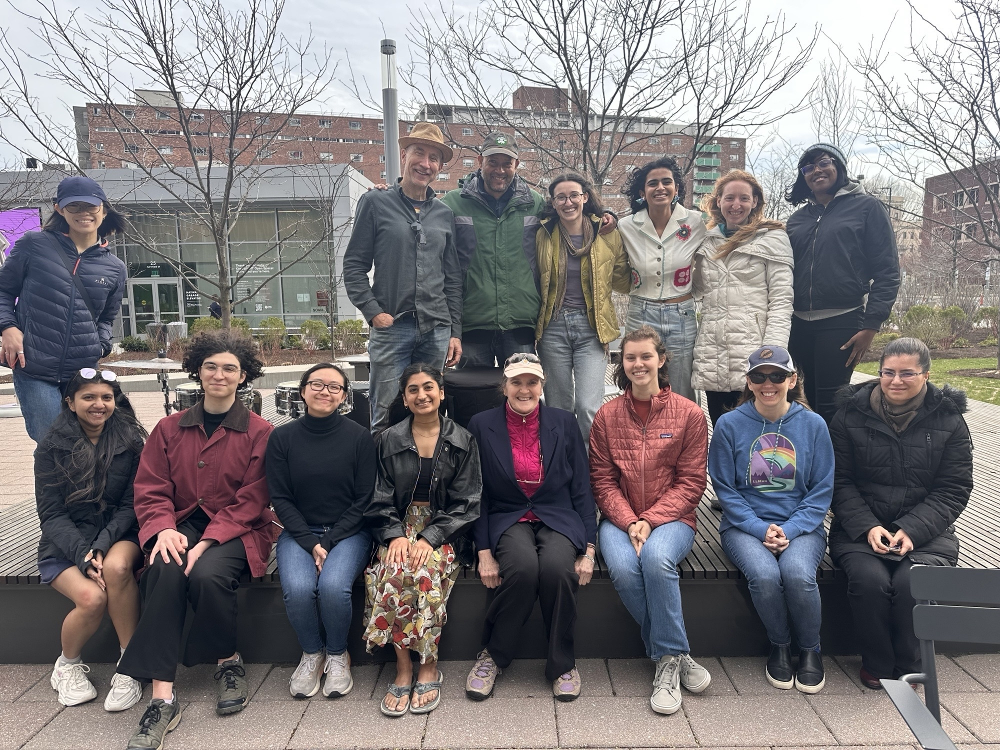
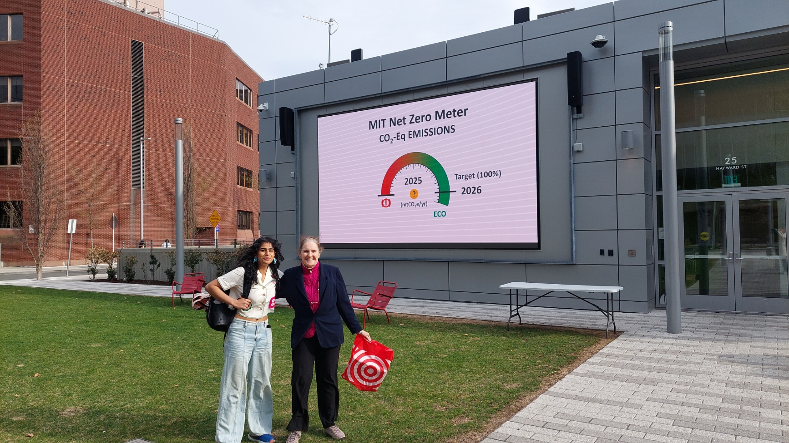
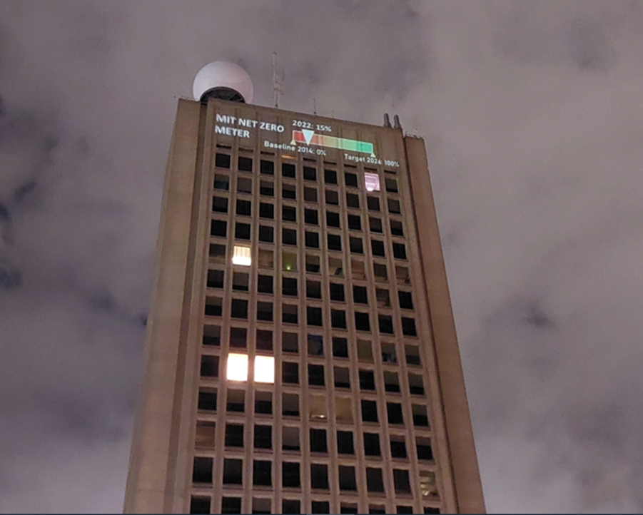
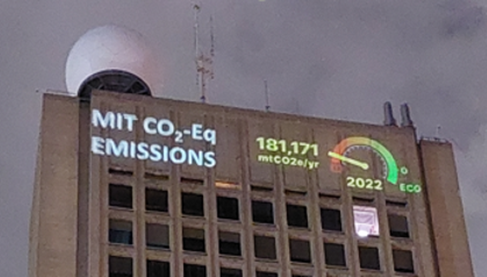

- Major effects on warm-water coral reef ecosystem.
- Significant imapcts on vulnerable ecosystems and species (polar regions, wetlands, and cloud forests).
- Increase in coastal and river flooding.
- Increase in extreme weather events.
- Increase in the spread of tropical infectious disease.
- Increase in heat-related morbidity and mortality.
Messages
Kendall/MIT Open Space, April 16th - 23rd, 2025
During Earth Week, 2025, people gathered for a week of educational events celebrating our Earth and community action at Kendall/MIT Open Space. Videos showcasing our climate clock project history played, along with recordings from relevant lectures and project presentations. From drumming performances, to a circle discussion with a panel of climate activists, people connected around our shared love of our planet.

MIT Green Building, November 30th - December 12th, 2023
In Fall 2023, the Undergraduate Association Sustainability Committee set up a "Hack the Climate Clock" event, opening up the opportunity for all students across MIT's campus to compete in proposing the best new climate message for the November / December 2023 period. The winning student team would get the opportunity to project their message onto the Green Building (#54), one of the tallest buildings in Cambridge and home to the Department of Earth, Atmospheric, and Planetary Sciences.
Four teams of students submitted ideas for updating the Climate Clock. The climate message created by MIT undergraduates Norah Miller and Eleanor Li was selected as "the winner." Norah and Eleanor’s climate clock message displayed from November 30 through December 12, 2023 to coincide with COP28.
For details on Norah and Eleanor's Nov/Dec 2023 projection, see: References and Assumptions
Video for MIT Kendall Open Space, Spring 2025
MIT Green Building, Spring 2023

Our MIT D-Lab Climate Clock team came up with the idea of a meter to showcase MIT’s efforts to "eliminate direct emissions by 2050" the commitment the MIT Administration made in Fast Forward: MIT's Climate Action Plan for the Decade (2021) p.12. The Administration has also committed to Net-Zero direct emissions by 2026.
Student feedback led us to create two versions of the MIT Net Zero Meter: one showing MIT's net zero commitment as an annual percentage(%), the other in absolute numbers. Moving beyond "0" to "ECO" is the goal. MIT Climate Clock team member, Jillian James, Aero Astro '10 and '16, who had taken a course covering spaceship dashboard design, led in the design of this meter.
Complete Message Accompanying the 2023 Net-Zero Meter
|
 |
MIT has committed to net-zero direct emissions by 2026, meaning that
MIT must take as much carbon out of the atmosphere as it put into it.
However, research shows the climate mitigation may require us to go
carbon negative. According to the Internation Energy Agency (IEA): "Becoming
carbon negative requires a company, sector or country
to remove more CO2 from the atmosphere than it emits. Meeting ambitious
international climate goals may require global CO2 emissions to fall below
zero in the second half of this century, achieving what is known as net negative
emissions."
MIT Green Building, 2021 and 2022
The MIT Climate Clock team originated as a MIT D-Lab: Water, Climate Change and Health class project in Spring 2020, and has continued from then until now with D-Lab involvement and support. While originally considered as an MIT hack, the MIT Climate Clock team quickly realized that we wanted to be a permanenber presence on campus. Hacks are one-offs, but we wanted to be a permanent installation. Therefore we decided to pursue MIT Administration approval. Our idea was originally inspired by the CITGO sign in Kenmore Square, a prominent feature of the Boston skyline, that has advertised a fossil fuel corporation since the 1960's. We wanted to create a new landmark on the Cambridge skyline, marking a different era with different priorities and values.
Originally we wanted to project NOAA's carbon dioxide animation which shows how atmospheric CO2 concentration has increased dramatically over the last 800,000 years, and exponentially in the past century. But then the Covid-19 pandemic came and although there was a D-Lab team already formed to imagine and carry out a monumental science-art display, the year 2020 was not the right time to begin.
Six months later, we learned of the New York City Climate Clock, which began projection in September 2020. We thought: "Yes! That's exactly what we want to do too." From that day forward, our aim was to create and project climate messages along the lines of the NYC Climate Clock model.
We sought to display the MIT Climate Clock in the most fitting location on campus — at the top of the south facade of the Green Building, aka the Department of Earth, Atmospheric and Planetary Science building, the 1st (then) and now 2nd tallest building in Cambridge.
The MIT Climate Clock received MIT Administration approval for its first projection during Earth Week, April 22, 2021. Since then, we have been approved for six short-duration (10 days to 2 mo.) projections. The first four displays projected the same message, only changing locations on different parts of the Green Building.
Projection 1: April 22 (Earth Day) to April 30, 2021. The location of this projection was at the bottom of the south façade of the MIT Green Building. |
Projection 2: October 29 to November 21, extended to December 21, 2021. The location of this projection was at the top of the west façade of the MIT Green Building. |
Projection 3: April 22 (Earth Day) to May 27, 2022. The location of this projection was at the top south façade of the MIT Green Building. |
Projection 4: November 8 to 18, 2022. The location of this projection was at the top south façade of the MIT Green Building. |
In 2021, the team projected onto the west side of the Green building, as seen in the video below.
Video Credit: Gaurav Patekar
Our team has evolved the "climate message" concept over time. The first four projections, included the NYC Climate Clock "deadline" and "lifeline" calculations. Both their message and our message centered around the "the deadline" — the projected time remaining before the global average annual temperature warming exceeded 1.5°C, the more ambitious of the Paris Climate Goals. Concurrently, the team collected responses from the MIT community via a survey conducted with passers-by at the Stratton Student Center. Incorporating community feedback and anticipating global average temperature to overshoot the 1.5oC goal sooner than projected, we decided on a new MIT Climate message in April 2023: the MIT "Net-Zero Meter." This projection showed MIT's progress and commitment to achieve net-zero greenhouse gas emissions by a 2050 deadline.
What the First Climate Clock Shows
GOAL: LIMIT GLOBAL TEMPERATURE RISE TO 1.5°C (2.7°F)
CO2 EMISSIONS BUDGET:
DEADLINE: ZERO EMISSIONS BY:
LIFELINE: % OF WORLD'S ENERGY FROM RENEWABLES:
TOGETHER WE CAN CHANGE!
We project scientifically accurate information on the top of the south face of the Green Building. The building is one of the tallest in Cambridge, and home to the MIT Department of Earth, Atmosphere and Planetary Sciences. The MIT Climate Clock features four lines that highlight the need for climate action.

Goal
to limit global temperature increase to 1.5°C (2.7°F) which is the target embraced in the COP21 Paris Agreement. The Paris Agreement, signed in 2015, is a legally binding international treaty on climate change to "limit global warming to well below 2, preferably to 1.5 degrees Celsius, compared to pre-industrial levels"

Carbon Dioxide Emissions Budget
a very large number from which one derives the actual time of the climate clock. The "Carbon Dioxide Emissions Budget" represents how much carbon dioxide the world as a whole can release into the atmosphere with at least a 66% chance of avoiding global average temperature increases of 1.5°C (2.7°F).
Deadline
Credible current projections suggest we have about seven years left at current emission rates. The "Deadline" is another way of expressing the carbon dioxide emissions budget. It's the time we have left to take decisive action to limit global average temperature increase to 1.5°C (2.7°F).
Lifeline
The "Lifeline" represents the percentage of the world's energy that is currently provided through renewable sources.
TOGETHER WE CAN CHANGE!
This project has given us hope. As one team member, Jenning Chen, MIT'21, puts it "I am a senior. I am graduating after four years. Yet this is the best thing I have ever done at MIT."
History has shown that with united action, we can have a global impact. It's been done before. For example, as a direct result of global actions taken after signing the historic Montreal Protocol, satellite data has shown that the ozone hole has healed.
In 2021, climate campaigners at the Glasgow, Scotland Conference of the Parties COP26 turned out in huge numbers, massively exceeding expectations. Youth-led groups, such as Friday for the Future, Extinction Rebellion and the Saturday Global Day of Action showed that the climate movement by youth and ordinary citizens matters and can make a difference.
Humans are a powerful species — we have changed the climate of the entire planet without intending to. Now, with conscious effort and the force of a committed global community, we must help create a livable climate to survive. By acting together, we can turn this emergency into an opportunity to create a better world. The ultimate goal that we aspire to is a habitable and equitable planet for all humans and all life on Earth.
Sources of the Numbers
Our carbon dioxide budget data is aligned with the latest IPCC AR6 2021 report (see table SPM.2). The resulting deadline should closely mirror the numbers displayed on the Mercator Institute website . Lifeline global renewable energy sourcing estimates are the result of counting forward from the middle of 2020 starting from 12.55%, based on data from the World Energy 2021 Special Report.
In order to figure out the time available for action, one can compute a carbon dioxide budget. The budget answers the question "how much carbon dioxide can we put into the atmosphere, globally, before reaching 1.5°C above pre-industrial levels?"
To solve for the budget, one needs to know the "account limit" and the expenses.
The Account Limit: Carbon Dioxide Threshold
Using measurements and models, scientists calculated the maximum amount of carbon dioxide that can be in the atmosphere without exceeding a certain average temperature above pre-industrial levels by 2100. The number is approximately 400 giga-tonnes of carbon dioxide [IPCC AR6].
The Expenses: Atmospheric Carbon Dioxide
But how much carbon dioxide is already in the atmosphere? Measurements are taken regularly at Mauna Loa Observatory in Hawaii. At the start of 2022, there was already 417 ppm of carbon dioxide in the atmosphere, up from under 300ppm in 1950 [IPCC AR6, A.1.1]. Every year that more carbon dioxide is emitted into the atmosphere, atmospheric carbon dioxide "expenses" increase. By the same token, as we reduce our CO2 emissions, or sequester carbon, our expenses decrease. If our sequestration equals our emissions, we've hit "net-zero," such that we're removing as much carbon from the atmosphere as we're putting into it.
The Balance: CO2 Emissions Budget
The balance is simply the limit minus the carbon dioxide already in the atmosphere. We call this number the "CO2 Emissions Budget." It decreases each day as more carbon dioxide goes into the atmosphere.
For more resources describing carbon budgets, see Climate Change: What is the carbon budget? and The Carbon Budget - what is it and why is it important?
Arriving at a CO2 Budget
To convert the carbon dioxide budget into a countdown clock, we make assumptions about our world. We assume that global carbon dioxide emission rates stay fixed, and calculate how much time is left before the budget is used up. We use the assumption that the CO2 Emissions budget is reduced by 42.2 Gt of CO2 per year, or 1,337 tonnes/sec based on this reference: Mercator Research Institute on Global Commons and Climate Change (MCC). The Mercator Research Institute relies on data from the recent IPCC Special Report on Global Warming of 1.5°C . Calculations are based on the year 2020, counting down the expended carbon budget from there. The budget specifically addresses carbon dioxide, not directly including additional greenhouse gasses such as methane. Carbon dioxide is particularly important, as it remains in the atmosphere on the order of 300-1000 years.
There are other limitations to our budget calculation. The annual emissions of 42.2 Gt-CO2/yr from the MCC include sources like "burning fossil fuels, industrial processes and land-use change". They do not factor in additional emissions from long-term changes in natural sources and sinks due to potential thresholds and tipping points, such as such as permafrost melting causing the release of gas hydrates, melting of the Greenland or Antarctic ice sheets, slowing down the North Atlantic deep ice circulation or the dieback of the Amazon rainforest. While the effects of these natural sources are large, the timescale for these changes may be on the order of decades to centuries, which is much longer than the timescale of our climate clock. Thus we chose not to include these in the budget (but will continue to revisit those issues).
COVID-19 temporarily changed our global carbon dioxide emission rate. According to the Global Carbon Project report from December 11, 2020, "Total CO2 emissions from human activities (from fossil CO2 and land-use change) are set to be around 40 billion tonnes of CO2 in 2020, compared to 43 billion tonnes of CO2 in 2019." Furthermore, "global fossil CO2 emissions are expected to decline approximately 2.4 billion tonnes of CO2 in 2020 (-7%), a record drop. The decrease in emissions, caused by COVID-19 confinement measures in place, brings global fossil CO2 emissions to 34 billion tonnes of CO2... Emissions in 2019 were only 0.1% above emissions in 2018, at 36.4 billion tonnes of CO2."
Since 2020, we have begun to see a rebound effect, however. Thus we can approximate total annual emissions, mostly from fossil fuels and land use changes, as 42.2 GtCO2 for the purposes of our climate clock.
Of course there is uncertainty in our future emissions. Our goal is not to predict the future, but rather to ignite action to move towards a liveable future for humanity. Visit the Global Carbon Project to learn from scientists about how international responses to COVID-19 have impacted emissions, and thus the carbon dioxide budget.
Measuring the Progress of Renewable Energy
Energy produced from burning fossil fuels contributes more than any other source to the increasing levels of carbon dioxide in the atmosphere. Sourcing energy from renewables instead means less carbon going into the atmosphere. It was estimated in the World Energy Special Report 2021 by BP that in 2020, 12.55% of the world's energy came from renewable sources and hydro-electric: 5.7% from renewables, and 6.86% from hydro [World Energy Special 2021 Report, page 11]. Including nuclear leads to ~16.8%. Energy consumption consists of electricity, transport and heating energy. When examining just electricity, renewables (including hydro) comprise 27.8% of the electricity sources in the world [WE report, page 65]. In our accounting, renewables include solar, wind, hydropower, and modern bio-fuels. We do not include nuclear, or traditional biofuels (such as fuel-wood, forestry products, animal and agricultural waste) in the estimate. Around the world, even as the supply of energy increases, more and more energy is derived from renewable sources.
To pass net-zero, the point when globally we begin extracting carbon from the atmosphere, we need this percent to increase as much as possible towards 100%. According to World Energy data, the growth rate of renewables (and biofuels, no hydro) for 2020 was 12.5%. In fact, despite decreases in energy consumption, renewable generation still increased. For hydro it was 1% with 4296 Terra-watt-hours of energy from hydro.
For our computations, we use the following numbers:
2020 renewables (hydro+solar) = 38.16 + 31.71 = 69.87eJ
2019 renewables (hydro+solar) = 37.69 + 28.82 = 66.51eJ
2020 total energy consumption = 557.10eJ
2019 total energy consumption = 581.51eJ
2020 renewable energy / total = 12.541734%
2019 renewable energy / total = 11.43746%
2019 renewables (hydro+solar) = 37.69 + 28.82 = 66.51eJ
2020 total energy consumption = 557.10eJ
2019 total energy consumption = 581.51eJ
2020 renewable energy / total = 12.541734%
2019 renewable energy / total = 11.43746%
For our projection, we begin at 12.541734% at the middle of 2020, and approximate the increase of renewables based on 3.501617*10^-8 %/sec, which comes from (12.541734%-11.43746%)/(365*24*3600s). If nuclear were included as a low-carbon source, the lifeline would be roughly 4.24% higher.
Harvard Lehman Hall, 2022 and 2023
Beyond MIT, with Harvard students and colleagues, we helped them launch their first Harvard Climate Clock in Harvard Yard on the upper façade of Lehman Hall for Earth Day events on April 22nd, 2022 and again on Earth Day 2023.
Harvard got its own Climate Clock thanks to a Harvard PhD student, Anita Chandrahas, who took the D-Lab class in 2022 and joined the MIT Climate Clock team. Anita then brought a Climate Clock to Harvard while also connecting with a "Great Food Transformation" class at Harvard. Anita's work inspired a student team in that class to engage with the LED Climate Backpack action.
MIT and Harvard, 2022 and 2023
As part of our parallel Earth-Day events at MIT and Harvard, we engaged people using Climate Interactive's En-ROADS simulator to learn about the climate. Plant-based ice cream served in compostable dishes was served to showcase sustainable food solutions.
Photo Credit: Ella Lopez
Streets of Cambridge, 2022 and 2023
|
Credit: Claire Wang |
Beyond the big screen, we've gone mobile via backpack! Gaurav Patekar (MIT'21) conceived of a community awareness project where climate information is displayed on an LED backpack. People can volunteer to borrow the backpack for a week, sparking conversations about our climate. Volunteers can then pass the backpack on to another person to continue the chain of engagement. |
 |